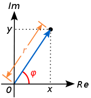

复数 (complex number) 定义为 \(z = x + yi\), 其中 \(i^2 = -1\) 称为虚数单位, \(x, y\in \mathbf{R}\) 为实数, 分别称为 \(z\) 的实部 (real part) 和虚部 (imaginary part). 复数的全体记为 \(\mathbf{C} = \{x + yi|x, y \in R\}\). 显然实数是一类特殊的复数 \(\mathbf{R} = \{z\in \mathbf{C}|y=0\}\).
考虑两个复数\(z_1 = x_1 + y_1 i\) 和\(z_2 = x_2 + y_2 i\). \(z_1=z_2\) 当且仅当 \(x_1 = x_2, y_1 = y_2\). 复数的加法和乘法运算规则如下
加法 (addition): \[\begin{eqnarray*} z_1 + z_2 = (x_1+x_2) + (y_1+y_2)i \end{eqnarray*}\]
乘法 (multiplication): \[\begin{eqnarray*} z_1z_2 = (x_1x_2-y_1y_2) + (x_1y_2 + x_2y_1)i \end{eqnarray*}\]
通过加法和乘法, 可以得到减法:
为了定义复数的除法, 首先定义复数 \(z\) 的模长和共轭.
模长 (magnitude): \[\begin{eqnarray*} |z| = \sqrt{x^2 + y^2} \end{eqnarray*}\]
共轭 (conjungate): \[\begin{eqnarray*} \bar{z} = x - yi \end{eqnarray*}\]
由共轭的定义可以得到 \(z\bar{z} = |z|^2\), 由此可以定义 \(z\) 的倒数:
由此可以定义复数的除法:
根据定义, 复数 \(z\) 可以看成复平面上的一个点, 并使用极坐标表示: \[\begin{eqnarray*} z = r(\cos\varphi + i\sin\varphi), \ \ \text{ 其中 } \ r \in [0, \infty), \varphi \in (-\pi, \pi] \end{eqnarray*}\] 
由欧拉公式\(e^{i\varphi} = \cos\varphi + i\sin\varphi\), 可得 \[\begin{eqnarray*} z=re^{i\varphi}. \end{eqnarray*}\]
在极坐标下复数的加法和减法可以看成复平面上向量的加法和减法, 乘法和除法也有清晰的几何意义.
\[\begin{eqnarray*} z_1z_2 & = & r_1r_2e^{i(\varphi_1 + \varphi_2)} = r_1r_2(\cos(\varphi_1+\varphi_2) + i\sin(\varphi_1+\varphi_2)) \\ \frac{z_1}{z_2} & = &\frac{r_1}{r_2}e^{i(\varphi_1 - \varphi_2)} = \frac{r_1}{r_2}(\cos(\varphi_1 - \varphi_2) + i \sin(\varphi_1 - \varphi_2)) \end{eqnarray*}\]
在极坐标下可以方便的定义复数的指数函数, 对数函数和幂函数: \[\begin{eqnarray*} e^{z} &=& e^{r(\cos\varphi + i\sin\varphi)} = e^{r\cos\varphi}(\cos(r\sin\varphi) + i\sin(r\sin\varphi)) \\ \ln z &=& \ln(re^{i\varphi}) = \{\ln r + (\varphi + 2k\pi)i | k为整数\} \\ z^a &=& e^{\ln z^a} = e^{a\ln z} = \{e^{a (\ln r +(\varphi + 2k\pi)i)}| k为整数\} \end{eqnarray*}\]
定义 ComplexCart 类, 它使用笛卡尔坐标系来代表复数, 包含以下 API 且为不可变的 (immutable).
| 方法 说明 | |
|---|---|
| ComplexCart(double real, double imag) | 构造函数 |
| ComplexCart add(ComplexCart x) | 返回与x的和 |
| ComplexCart subtract(ComplexCart x) 返 | 回与x的差 |
| ComplexCart multiply(ComplexCart x) | 返回与x的积 |
| ComplexCart divide(ComplexCart x) | 返回与x的商 |
| ComplexCart reciprocal() | 返回倒数 |
| ComplexCart conjugate() | 返回共轭 |
| double abs() | 返回模长 |
| double getRealPart() | 返回实部 |
| double getImaginaryPart() | 返回虚部 |
| boolean equals(ComplexCart x) | 是否等于x |
| String toString() | 字符串表示 |
思考并回答以下问题:
在 API 中加入方法 ComplexCart add(ComplexCart x, ComplexCart y) (返回三个复数的和)是否合适?
在 API 中加入方法 ComplexCart scale(double f) (返回与一个实数的乘积) 是否合适?
在 API 中加入方法 boolean isReal() (返回是否是实数) 是否合适?
在 API 中加入方法 void setRealPart(double a) (将实部修改为a) 是否合适?
在 API 中去掉方法 double abs() 是否合适? (由定义, 模长可以通过乘法计算得到)
在 API 中去掉除法 ComplexCart divide(ComplexCart x) 是否合适? (由定义, 除法可以由倒数和乘法得到)
在 API 中去掉方法 double getRealPart() 是否合适? (直接访问实部)
以下两种使用方法哪一种更好? 为什么?
ComplexCard a = new ComplexCart(1, 2);
ComplexCard b = new ComplexCart(3, 4);
double real = a.getRealPart() + b.getRealPart();
double imag = a.getImaginaryPart() + b.getImaginaryPart();
ComplexCard c = new ComplexCart(real, imag);ComplexCard a = new ComplexCart(1, 2);
ComplexCard b = new ComplexCart(3, 4);
ComplexCard c = a.add(b);使用极坐标实现复数类 ComplexPolar , 包含相同的 API .
为ComplexCart类增加方法 ComplexPolar toPolar() 返回它的极坐标表示. 同样, 为 ComplexPolar 增加方法 ComplexCart toCartesian() 返回它的笛卡尔坐标表示.
为 ComplexPolar 类增加下列 API.
| 方法 说明 | |
|---|---|
| ComplexPolar exp() | 返回 \(e^z\) |
| ComplexPolar log() | 返回 \(\ln z\) (取k=0) |
| ComplexPolar pow(double a) | 返回 \(z^a\) (取k=0) |
为 ComplexCart 类增加以上 API.
给定二元一次方程, \(ax^2 + bx +c = 0\), 输出它的根.